Manual do AgendaPro
Para o dono do salão, da barbearia ou do estúdio. Do primeiro acesso ao fechamento do mês, passo a passo.
Os números vermelhos nos prints apontam os botões citados na legenda. Toque numa imagem para ampliar, e em Abrir no painel para ir direto à tela.
Nada encontrado. Tente outra palavra, ou toque em Falar com o suporte.
1. Primeiros passos
Na primeira vez que você entra, o AgendaPro abre um passo a passo que deixa o salão pronto para receber cliente. São quatro coisas, nesta ordem:
- Dados do negócio: nome, tipo (salão, barbearia, manicure, estética…), WhatsApp e endereço.
- Horário de funcionamento: os dias e as horas em que o salão abre.
- Serviços: o que você vende, com preço e duração.
- Quem atende: você e cada profissional que vai ter coluna na agenda.
Feito isso, o seu link de agendamento já funciona e você pode mandar para as clientes.
2. Conhecendo o painel
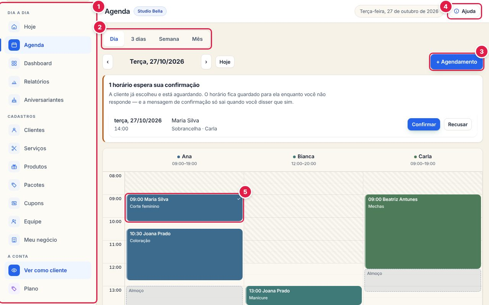
- O menu, com todas as abas.
- Dia, 3 dias, Semana ou Mês.
- + Agendamento, para marcar um horário.
- Ajuda: o manual e o WhatsApp do suporte.
- Um atendimento. Toque nele para abrir.
À esquerda fica o menu, dividido em três grupos. No celular ele se esconde: toque no botão de menu (as três linhas) no canto de cima.
| Grupo | Abas |
|---|---|
| Dia a dia | Hoje, Agenda, Dashboard, Relatórios, Aniversariantes |
| Cadastros | Clientes, Serviços, Produtos, Pacotes, Cupons, Equipe, Meu negócio |
| A conta | Ver como cliente, Plano |
No alto da tela, o botão Ajuda abre duas opções: este manual e o WhatsApp do suporte.
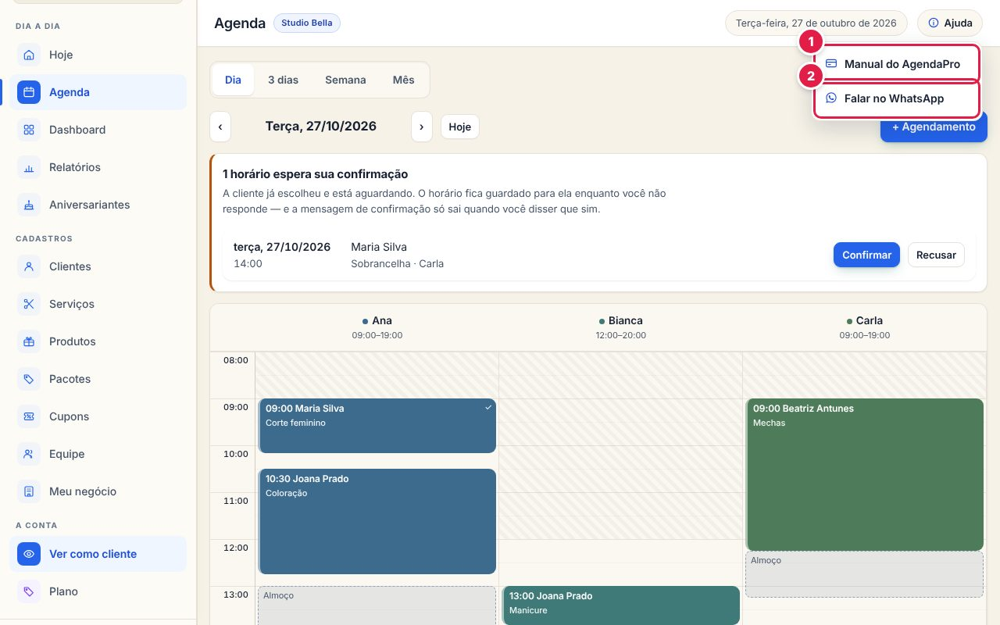
- Manual do AgendaPro: abre esta página.
- Falar no WhatsApp: abre a conversa com o suporte.
No pé do menu ficam: Manual do AgendaPro (esta página), Precisa de ajuda? (WhatsApp do suporte), Instalar aplicativo, Tema escuro/claro, Sair e o número da versão.
- Aba com cadeado faz parte de um plano acima do seu. Ela abre e mostra o que libera.
- A recepção e os profissionais veem menos abas que você. Veja Equipe e acessos.
3. Meu negócio
Menu → Cadastros → Meu negócio. Tem três partes no alto da tela.
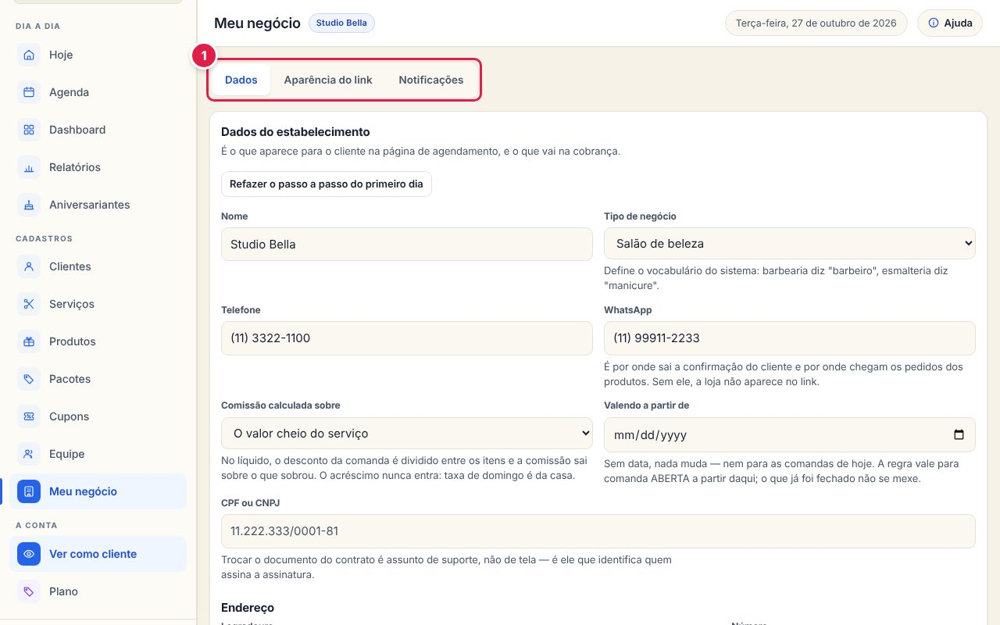
- As três partes: Dados, Aparência do link e Notificações.
Dados
- Dados do estabelecimento: nome, tipo, WhatsApp do salão e documento.
- Endereço: aparece no link para a cliente achar você.
- Horários de funcionamento: marque cada dia como Aberto ou Fechado. Use + Adicionar horário para quem fecha no almoço (por exemplo 9h–12h e 13h–19h).
- Formas de pagamento: Pix, dinheiro, cartão… aparecem para a cliente no link.
- Sobre o estabelecimento: o texto de "Informações" no seu link.
- O que a sua página oferece: liga e desliga, no seu link, o agendamento de serviços e a loja de produtos. Um não depende do outro.
Aparência do link
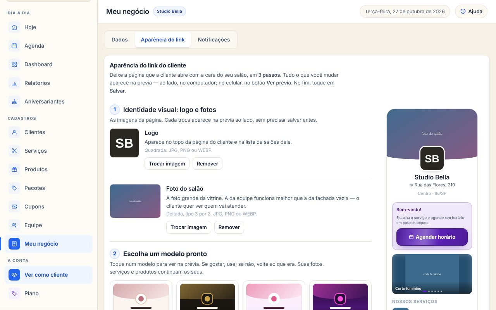
Logo, foto do salão, cores e o visual da página que a cliente abre. As fotos podem vir direto do celular: o sistema diminui o tamanho sozinho.
Notificações
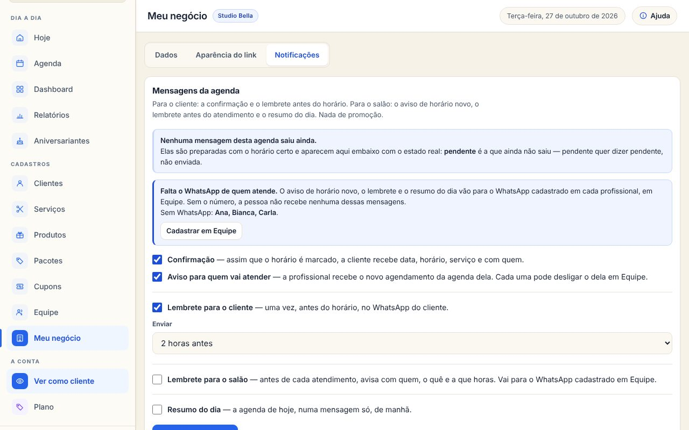
As mensagens de WhatsApp do salão. Veja Mensagens no WhatsApp.
4. Serviços
Menu → Cadastros → Serviços → + Serviço
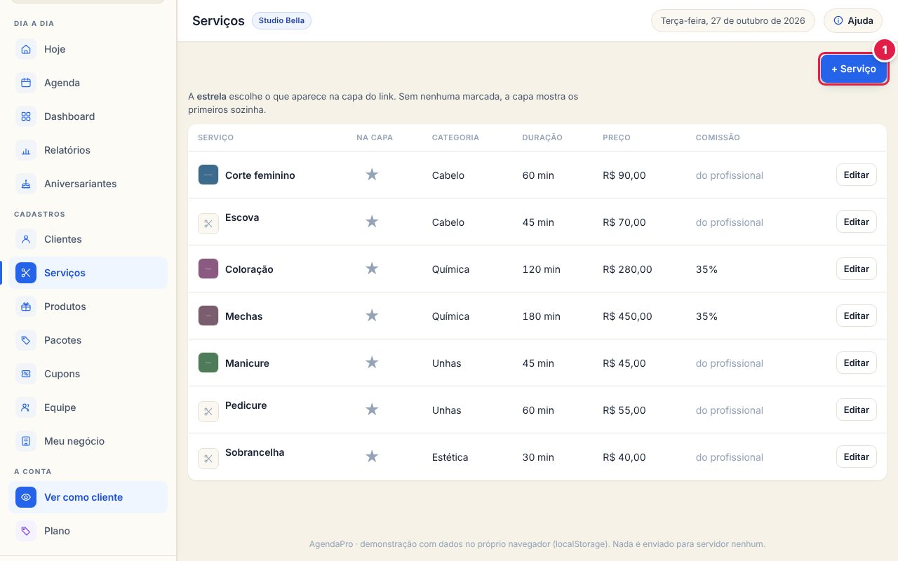
- + Serviço, para cadastrar um novo.
- Dê o nome que a cliente entende ("Corte feminino", "Pé e mão").
- Informe o preço e a duração. A duração é o que a agenda reserva: uma mecha de 3 horas ocupa 3 horas na coluna da profissional.
- Se quiser, preencha a comissão (em % ou em R$), o intervalo depois (tempo de limpar a cadeira) e uma foto. Foto de serviço é o que mais ajuda a cliente nova a escolher.
- Salve. Depois de salvo, em Quando é diferente com alguém você ajusta preço, duração e comissão de uma profissional específica (a sênior que cobra mais, a que demora menos).
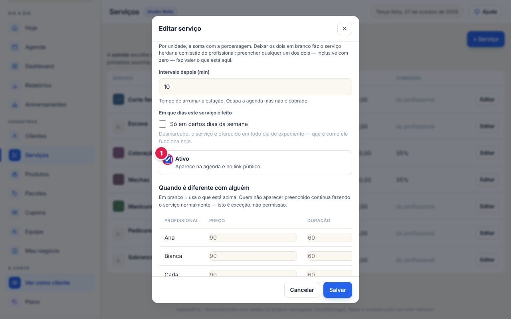
- Ativo: desmarcado, o serviço sai da agenda e do link.
5. Equipe e acessos
Menu → Cadastros → Equipe
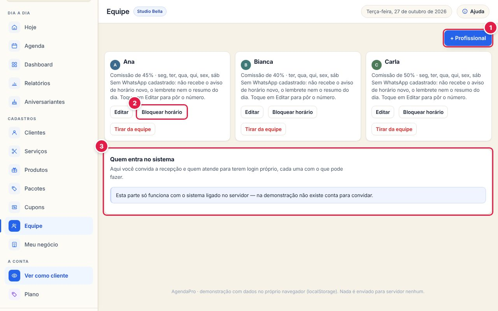
- + Profissional, para pôr alguém na agenda.
- Bloquear horário de uma profissional.
- Quem entra no sistema: os acessos (convites funcionam com o sistema ligado no servidor).
A tela tem duas partes, e elas são coisas diferentes:
- Profissionais (em cima): quem atende. Cada um ganha uma coluna na agenda, com a sua jornada (dias e horas), a comissão em % e o WhatsApp para receber os avisos.
- Acessos (embaixo): quem entra no sistema. Uma profissional pode ter coluna e nunca entrar; a recepcionista entra e não tem coluna.
O que cada papel enxerga
| Papel | Vê e faz |
|---|---|
| Dono / administrador | Tudo: dinheiro, relatórios, cadastros, plano. |
| Recepção | A agenda de todos e as clientes. Não vê relatórios, comissões das colegas nem o plano. |
| Profissional | Só a própria agenda, as clientes e a própria comissão. |
Bloquear um horário
Almoço, médico, folga: no cartão da profissional, toque em Bloquear horário, escolha o dia, das… às… e o motivo (só a equipe vê). O horário some da agenda e do link. Para desfazer, toque no bloqueio na agenda.
6. Agenda
Menu → Dia a dia → Agenda
Cada profissional é uma coluna, e cada linha é um horário. O listrado é fora da jornada; o hachurado é almoço ou bloqueio.
Mudar o que aparece
- No alto, escolha a vista: dia, 3 dias, semana ou mês.
- Use ‹ e › para andar e Hoje para voltar.
Marcar um horário
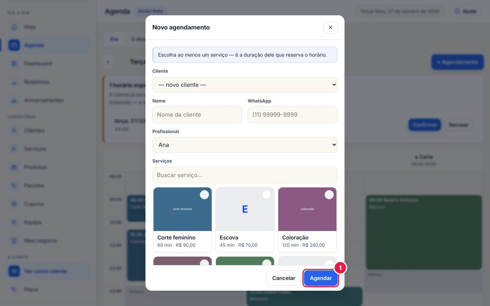
- Salvar grava o horário.
- Toque num espaço vazio da coluna da profissional (ou em + Agendamento).
- Escolha a cliente (ou cadastre na hora), o serviço e o horário.
- Salve. Se o horário já estiver ocupado, o sistema avisa antes de gravar, e nunca deixa duas clientes no mesmo horário da mesma profissional.
Mexer num horário marcado
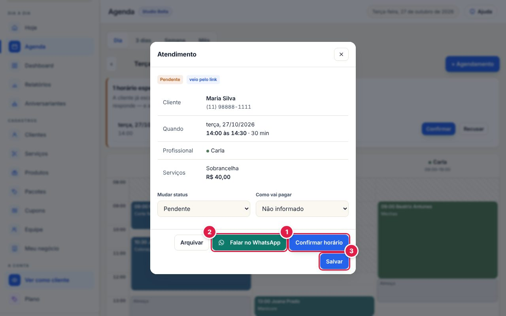
- Confirmar horário (aparece quando ele está pendente).
- Falar no WhatsApp com a cliente.
- Salvar depois de mudar o status.
Toque no atendimento. Ali você pode:
- Confirmar horário quando a cliente responder que vem.
- Trocar a situação: Pendente, Confirmado, Em atendimento, Concluído, Faltou ou Cancelado.
- Falar no WhatsApp com a cliente, com a mensagem já escrita.
As faixas que aparecem acima da agenda
- "… horários esperam sua confirmação": a cliente marcou pelo link e está aguardando o seu "ok".
- "… atendimentos ficaram sem desfecho": atendimentos de ontem e antes que ninguém fechou. Diga quem veio e quem não veio. Marcar quem faltou é o que alimenta o aviso de cliente que costuma faltar e os números de perda nos relatórios.
- "… pessoas esperando vaga": a lista de espera, com clientes que não acharam horário no link. Quando alguém desmarcar, chame a primeira da fila pelo WhatsApp.
7. Seu link de agendamento
Menu → A conta → Ver como cliente
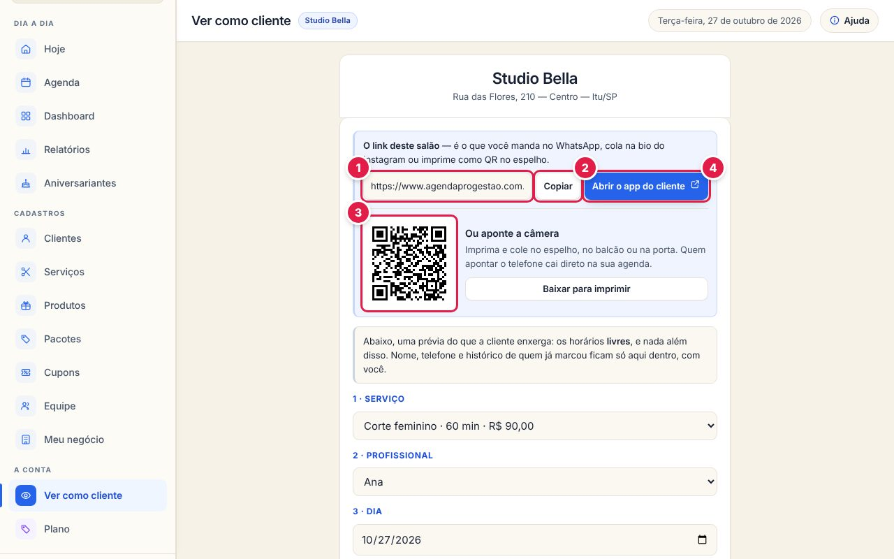
- O seu link.
- Copiar, para colar no WhatsApp ou no Instagram.
- O QR Code. Baixar para imprimir fica ao lado.
- Abrir o app do cliente: a página que ela vê.
É o endereço que a cliente abre para marcar sozinha, a qualquer hora. Ali você encontra:
- O link pronto, com Copiar, para mandar no WhatsApp e colar na bio do Instagram.
- O QR Code do link, para imprimir e deixar no espelho ou no balcão.
- Abrir o app do cliente, para ver exatamente o que ela vê.
Como a cliente marca
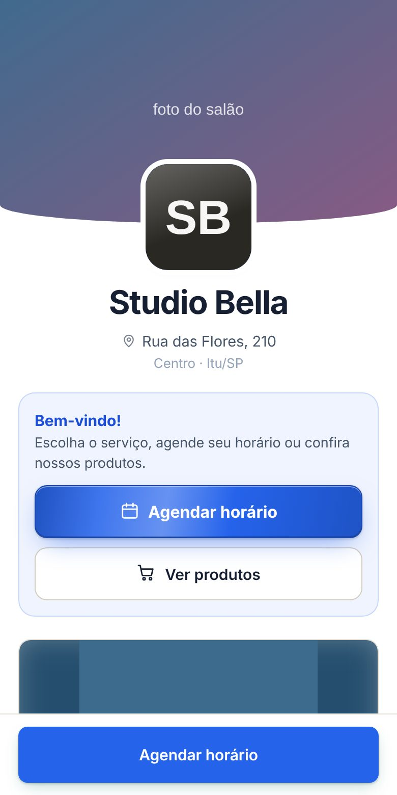
- Abre o link e escolhe o serviço.
- Escolhe quem atende (ou "tanto faz") e um dos horários livres.
- Confirma com o WhatsApp dela. Para ver, remarcar ou cancelar depois, ela recebe um código de confirmação.
8. Clientes e aniversariantes
Menu → Cadastros → Clientes
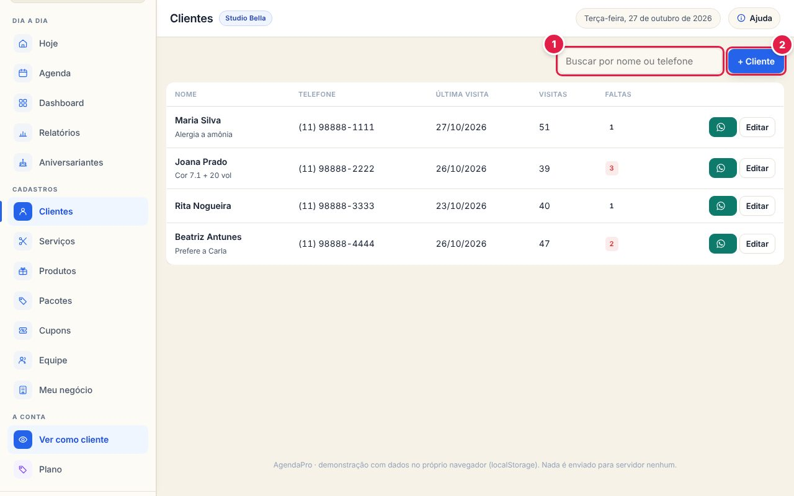
- A busca, por nome ou telefone.
- + Cliente, para cadastrar na mão.
- Busque por nome ou telefone no campo do alto.
- + Cliente cadastra na mão. Quem marca pelo link entra sozinha.
- Na ficha ficam o histórico de atendimentos, quantas vezes faltou e as anotações da equipe.
Menu → Dia a dia → Aniversariantes
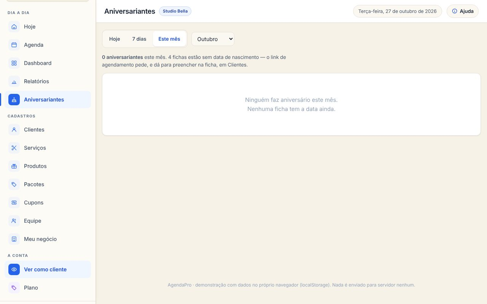
A lista de quem faz aniversário no período ou no mês escolhido, para mandar um parabéns ou um mimo. Para aparecer aqui, a ficha precisa ter a data de nascimento.
9. Fechar o atendimento
Quando a cliente for embora, toque no atendimento e marque Concluído. É isso que conta o atendimento no faturamento e na comissão da profissional. Não precisa lançar valor em outro lugar.
- Não veio? Marque Faltou. A ficha dela passa a mostrar quantas vezes faltou.
- Desmarcou? Marque Cancelado, e o horário volta a ficar livre no link.
- Esqueceu de marcar? No dia seguinte, a agenda mostra a faixa dos atendimentos sem desfecho e pergunta.
10. Hoje, Dashboard e Relatórios
Três telas, três perguntas diferentes. Só o dono e o administrador veem.
| Tela | Responde | Quando abrir |
|---|---|---|
| Hoje | "Como está o dia?" — quem vem, quanto já entrou, o que falta. | Ao chegar no salão |
| Dashboard | "Como vai o salão?" — cartões que você liga, desliga e põe na ordem que quiser. | Uma olhada por dia |
| Relatórios | "Quanto foi em março?" — faturamento por serviço, por profissional e por forma de pagamento. | No fechamento do mês |
Nos Relatórios, use os atalhos de período no alto ou escolha as datas em De e até.
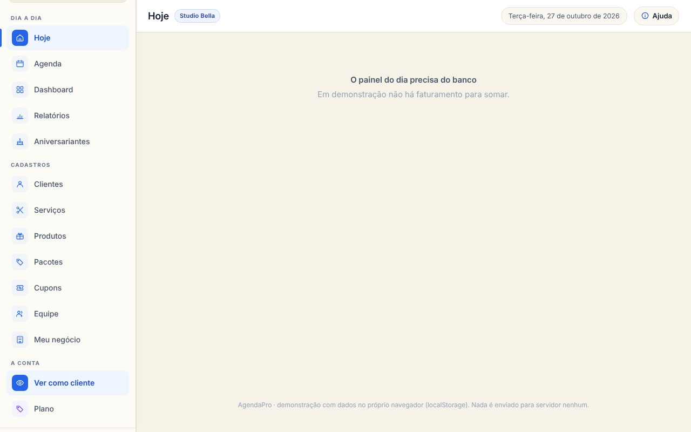
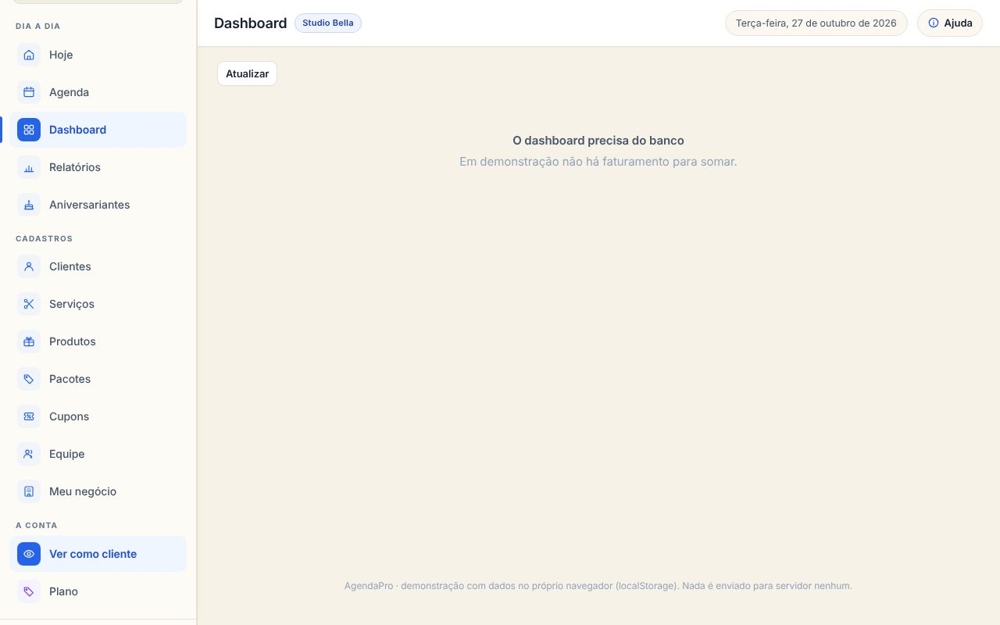
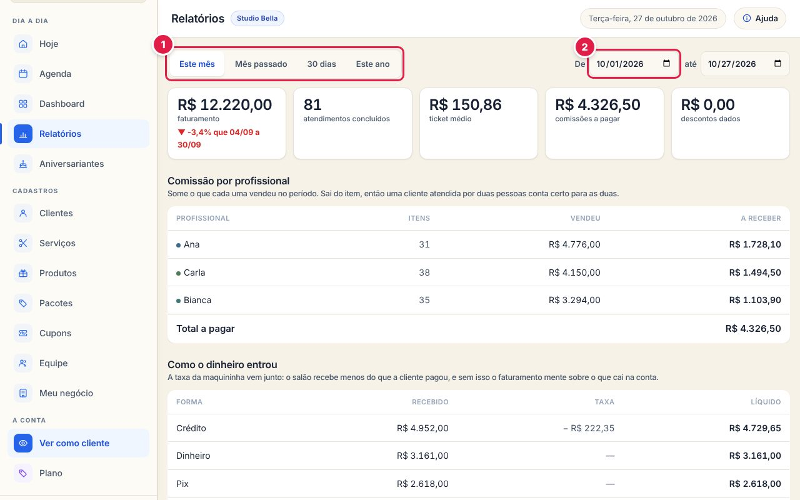
- Os atalhos de período.
- As datas De e até.
11. Produtos, Pacotes e Cupons
Fazem parte dos planos pagos (a aba mostra um cadeado no plano Grátis).
- Produtos: o que você vende no balcão, com custo, estoque e comissão. Podem aparecer na loja do seu link.
- Pacotes: sessões vendidas de uma vez ("10 escovas"). A cliente usa as sessões pelo link sem pagar de novo, e você pode limitar os dias da semana em que valem.
- Cupons: códigos de desconto para o link e para a loja, bons para promoção de dia fraco e para cliente nova.
12. Mensagens no WhatsApp
Menu → Cadastros → Meu negócio → Notificações
Aqui você escolhe quais mensagens o salão usa e escreve o texto de cada uma:
- Confirmação: para a cliente, quando o horário é marcado.
- Aviso para quem vai atender: para a profissional, a cada horário novo.
- Lembrete para o cliente: antes do horário, com a antecedência que você escolher.
- Lembrete para o salão: para você ou para a recepção.
- Resumo do dia: a lista da manhã ou da tarde para cada profissional, no horário que você marcar.
Embaixo, O que já foi preparado mostra o histórico das mensagens.
13. Seu plano
Menu → A conta → Plano
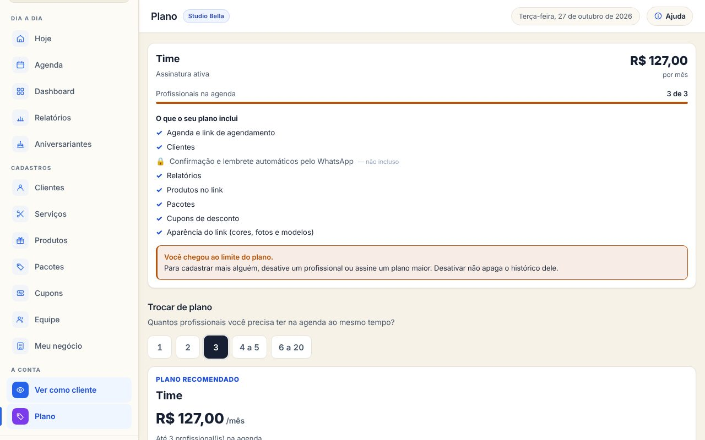
Mostra o plano de hoje, até quando ele vale e quanto você já usou: quantos profissionais estão na agenda e quantos horários foram marcados no mês.
- O que muda de um plano para outro é principalmente quantos profissionais podem ter agenda ao mesmo tempo. Em Trocar de plano você escolhe esse número e vê o plano que serve.
- No teste grátis está tudo liberado. Uma faixa no alto mostra até quando.
- Se o plano vencer, o salão não para: ele passa para o Grátis, com os limites do Grátis, e nada é apagado.
14. Usar no celular
O AgendaPro funciona no navegador do celular, do tablet e do computador. Para ter o ícone na tela inicial, como um aplicativo:
- Android (Chrome): no menu do painel, toque em Instalar aplicativo.
- iPhone (Safari): toque em Compartilhar → Adicionar à Tela de Início.
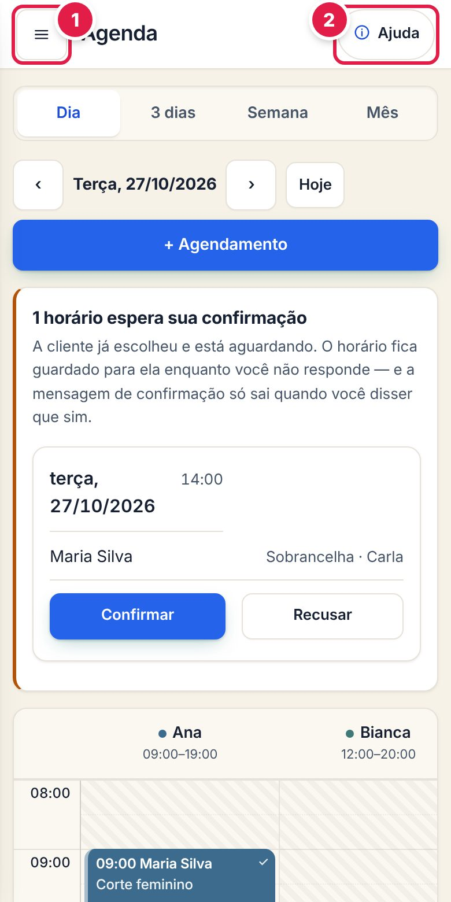
- O botão do menu.
- Ajuda.
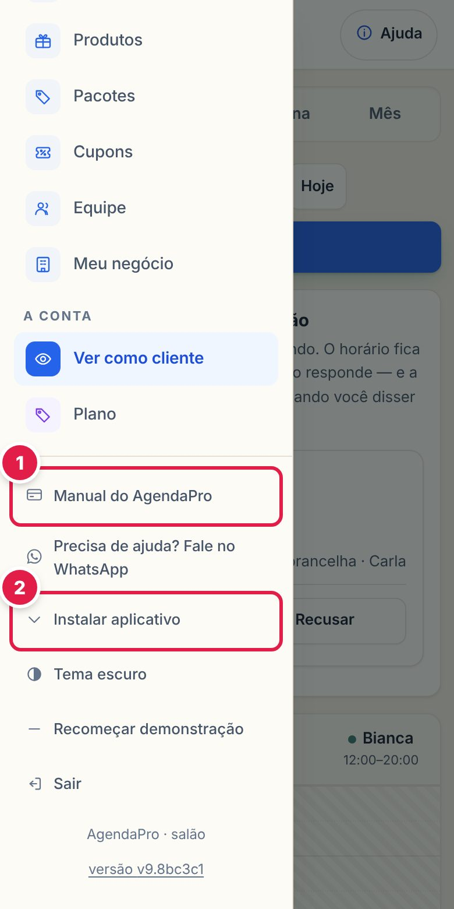
- Manual do AgendaPro.
- Instalar aplicativo.
Sem internet, a agenda já baixada continua abrindo, mas para marcar e salvar é preciso estar conectado.
15. Dúvidas frequentes
A cliente diz que não tem horário no link, mas a agenda está vazia.
Confira, nesta ordem: o horário de funcionamento do dia (Meu negócio), a jornada da profissional (Equipe), se o serviço está Ativo e não está limitado a certos dias da semana (Serviços), e se não há um bloqueio no período.
Tentei marcar e o sistema não deixou.
Ou o horário já está ocupado, ou cai num bloqueio, ou a profissional está fora do plano. A mensagem na tela diz qual dos três.
Apaguei um atendimento sem querer.
Atendimento não some: ele é arquivado, e o histórico da cliente continua guardado. Fale com o suporte para trazer de volta.
A tela parece desatualizada.
Toque no número da versão, no pé do menu. Ele recarrega o painel buscando a versão mais nova.
Esqueci a senha.
Na tela de entrada, toque em Esqueci minha senha. O link chega por e-mail e vale por 1 hora; só o do e-mail mais recente funciona.
A recepcionista viu algo que não devia.
Confira o papel dela em Equipe → Acessos. Recepção não vê relatórios, comissões nem o plano.
16. Falar com o suporte
No painel, toque em Ajuda (no alto) → Falar no WhatsApp, ou em Precisa de ajuda? (no menu). O WhatsApp já abre com o nome do salão e a tela em que você está, e assim a gente responde mais rápido.
Ou chame direto: (11) 96365-9620.
AgendaPro · Todos os direitos reservados. Software protegido por direitos autorais (Lei 9.610/98 e Lei 9.609/98). Reprodução, distribuição ou uso não autorizado são proibidos.